Objective of this project was to apply the learned contents of this
course:
For this project the public data set “BRFSS (Behavioral Risk Factor Surveillance System) 2013” was used, provided by the course.
The objective of BRFSS data collection is to determine behavioral
risk factors to chronic diseases in adults in the US. The data are
annually updated via telephone interviews throughout the US. This data
set contains 330 variables and 491,775 observations. Three meaningful
research questions had to be formulated and answered by statistical
analysis. The variables were explored and a subset of five variables was
selected.
Is income level (income2) correlated with general
health (genhlth)?
General health
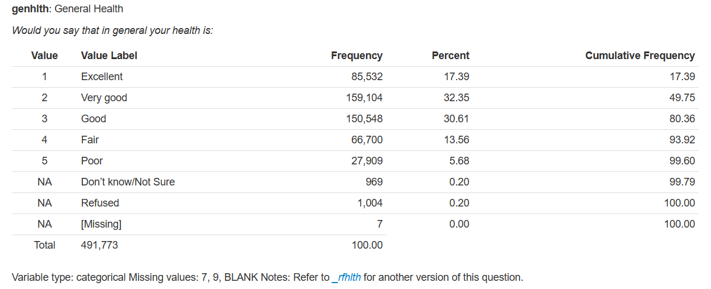
Income level
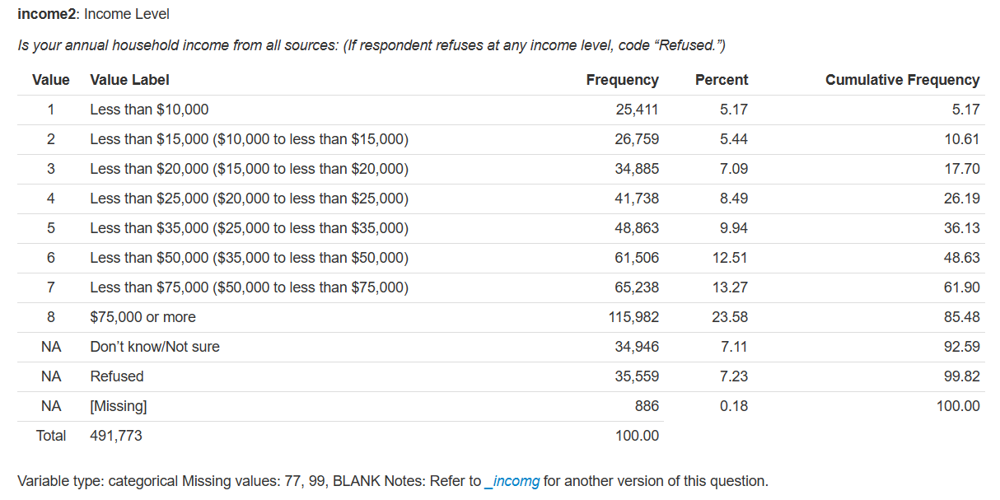
Both variables are categorical. Categorical variables are compared
best by a contingency table. The contingency table shows the count of
for each category from genhlth horizontally and from
income2 vertically.
Contingency table (all categories):
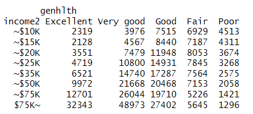
The proportion of each category can be visualized best by a mosaic
plot.
Mosaic plot:
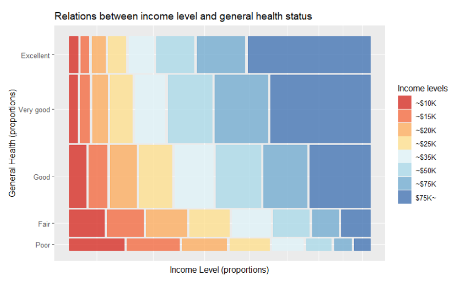
Conclusion:
For ease of understanding the categories in each variable were
aggregated to high and low levels.
Contingency table (aggregated):
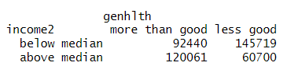
Mosaic plot:
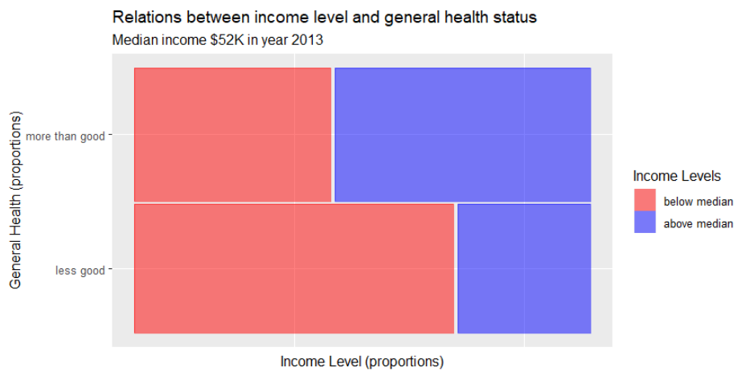
Conclusion:
a. What is the probability of “good health” given a “high
income”?
To calculate the different probabilities a contingency table with
margins (sums of each category) is helpful.
Contingency table with margins (aggregated):
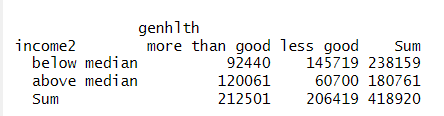
Result: P(good health | high income) = 0.6641975 or 66.4%
b. What is the probability of “high income” given a “good
health?
This can be derived directly from the contingency table or indirectly
calculated by Bayes Theorem: P(B|A) = (P(A|B) * P(B)) / P(A).
Result: P(high income | good health) = 0.5649903 or 56.5%
c. Are the variables “income level” and “general health”
independent or dependent?
To proof that event A (health) and B (income) are independent the
following condition must hold true: P(A|B) = P(A) or P(good health |
high income) = P(good health)
Result: P(good health | high income)= 0.6641975 and P(good health) =
0.5072591. They are not equal and therefore the variables are
dependent.
In this question we utilized two categorical variables: income and
general health. From contingency tables we found that income and general
health are correlated. We visualized the relationship by mosaic plots in
detail and in aggregated form.
From an aggregated contingency table we calculated conditional
probabilities and proofed dependency.
Is general health (genhlth) correlated with physical
activity (pa1min_) and how does it change by gender
(sex)?
General health
Physical Activity in minutes per week
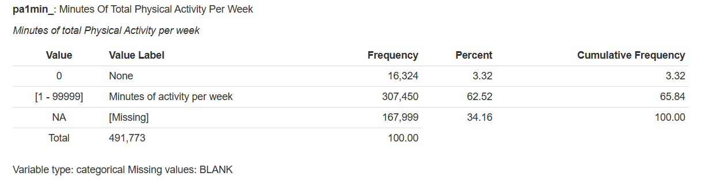
Gender
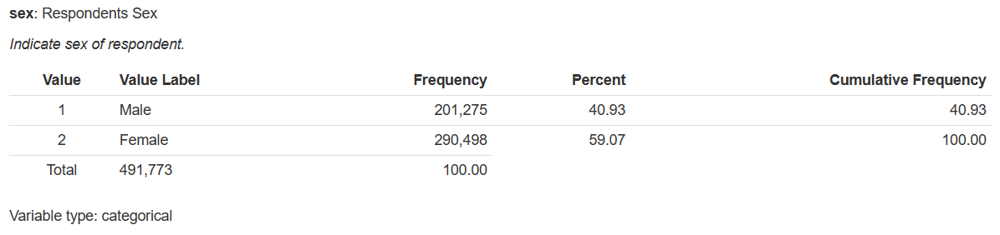
Physical activity is a numerical variable, General health and Sex are categorical variables. Exploration of numerical variable General health can be done best by histogram.
Histogram (original data)
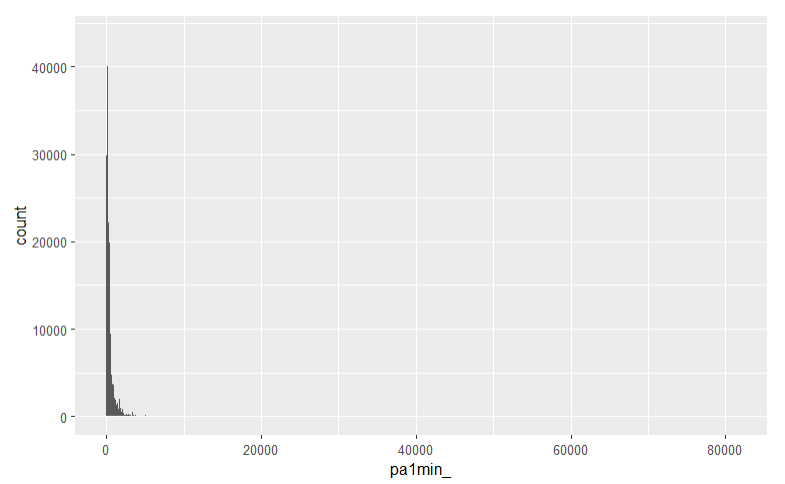
The histogram shows highly right-skewed distribution. This indicates
the existence of extreme values on the right. From the summary
statistics the maximal whisker was used as threshold to remove outliers,
resulting in a cleaned data set.
Histogram (cleaned data)
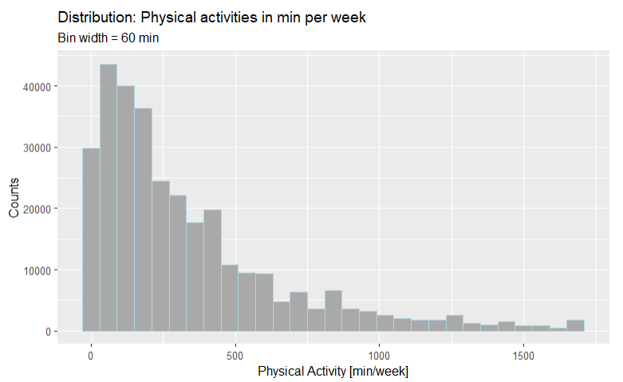
a. Describe physical activity statistically
For descriptive statistics of Physical Activity a
summary statistics, and box-plot were used.
Summary statistics of Physical Activity:
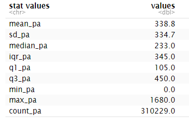
Box-plot
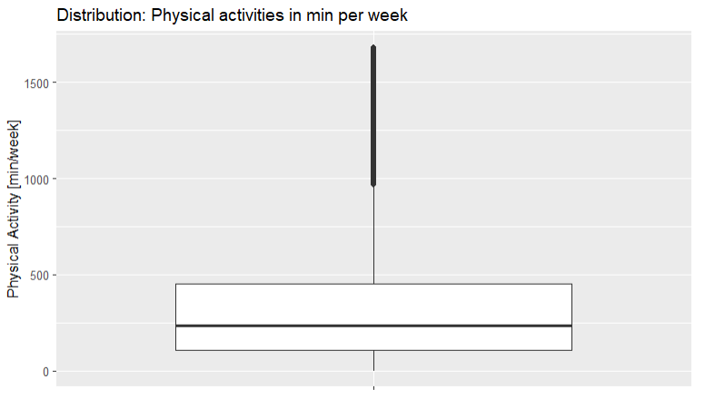
Result:
The distribution is right skewed and the statistics is best described
by median (233) and IQR or Inter Quartile Range (345)
b. Find the relationship between general health and physical
activity
Numerical variable (Physical Activity) and
categorical variable (General Health) can be compared
best by side-by-side box-plots.
Side-by-side box-plots
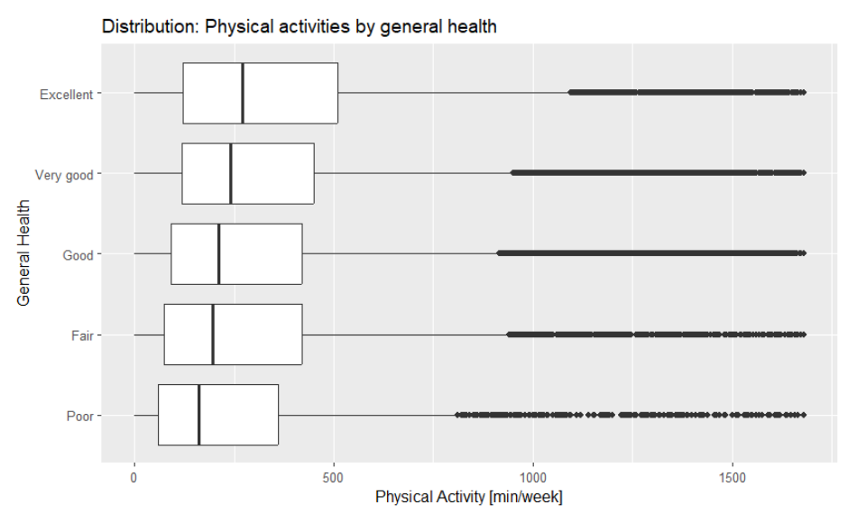
Conclusion:
c. Is there a difference in this relationship (b) in respect
to gender?
Numerical variable (Physical Activity) and 2
categorical variables (General Health,
Sex) can be compared best by 2-dimensional side-by-side
box-plots
Side-by-side box-plots
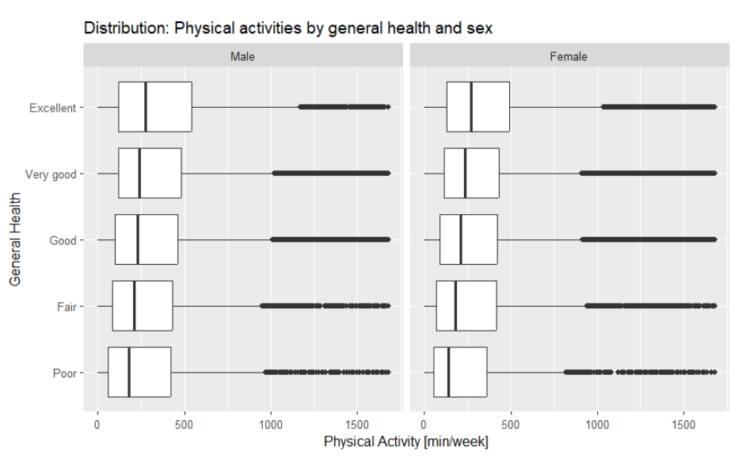
Conclusion:
In this questions we utilized three variables: one numerical variable
and two categorical variables. The numerical data had some implausible
data (outliers) which were removed. The comparison of all variables was
done with box-plots which allow an easy comparison over multiple
categories.
Is physical activity (pa1min_) correlated with BMI
(Body Mass Index) (X_bmi5) and how does it change with
general health (genhlth) and gender
(sex)?
Body Mass Index (BMI)
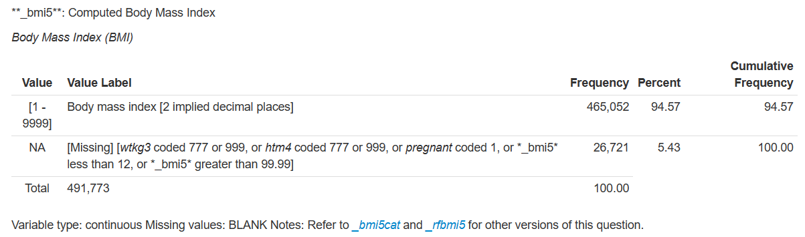
The BMI values in variable X_bmi5 includes 2 decimals and
is therefore divided by 100 to follow the convention.
Physical Activity (see section 2)
General Health (see section 2)
Sex (see section 2)
Physical activity and BMI are
numerical variable, General health and
Sex are categorical variables. Exploration of numerical
variable BMI can be done best by histogram.
Histogram
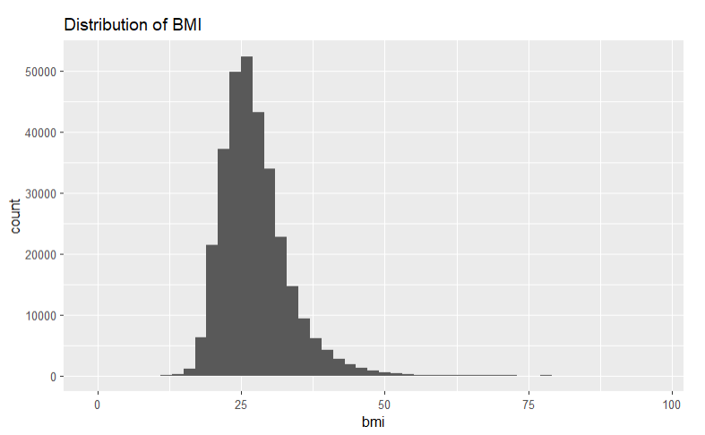
The BMI is slightly right-skewed with some extreme values on the
right
a. Describe BMI statistically
For descriptive statistics of BMI a summary
statistics, and box-plot were used.
Summary statistics:
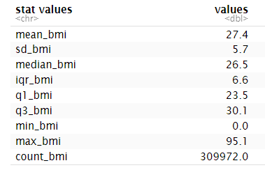
Box-plot
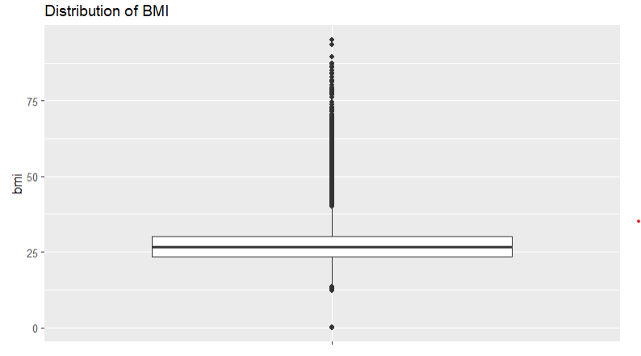
Result:
b. What is the relationship between physical activity and
BMI?
For comparison of two numerical variables a scatter plot is best to
show relationships.
Scatter plot
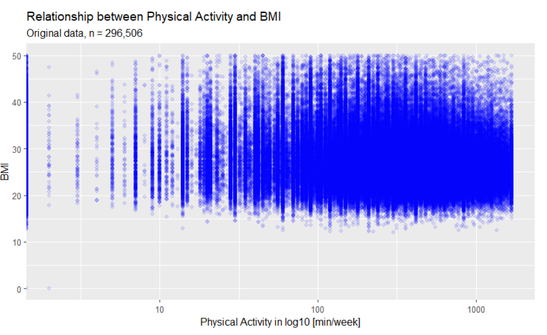
The scatter plot is “over-exposed” with too many data points (n =
296,506). To make the relationship more visible the data were reduced by
random sampling to 5% (n_sample =14,825).
Scatter plot (sampled data)
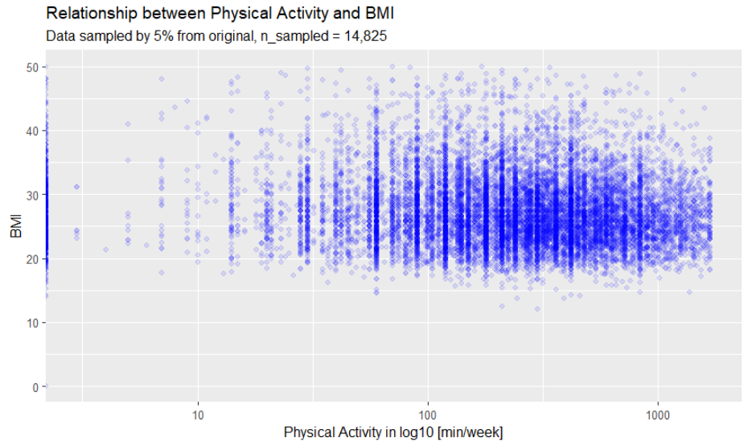
Conclusion:
c. Is there a difference in this relationship (b) in respect
to general health and gender?
The scatter plots were grouped in categories general
health and sex.
Scatter plot
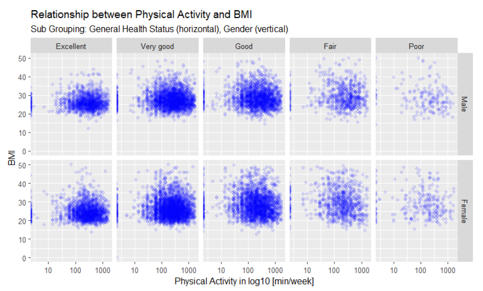
Conclusion:
Data exploration took about 1/3 of the project time. At first I jumped into the analysis too soon, without a deeper exploration resulting in meaningless results. In a second approach I analysed the data variables and data types more thoroughly by creating a csv-file for the variables for Excel. This helped a lot to understand the data and to navigate through the 330 variables without getting lost.
Since I have no deep background in the health domain, I selected more well-known variables such as physical activity and BMI index.
At first I wanted to calculate sports activity from two variables
exeroft1 (times of sport per month) and
exerhmm1 (duration in hhmm per activity). However, the data
description in the codebook was somehow ambiguous and I had to drop this
idea. Instead I choose the calculated variable pa1min_, but
it doesn’t specify the type of activity.
Another important topic was the treatment of potential outliers. I calculated a threshold for outliers from the maximum whisker formula and added a margin that seamed to be reasonable. Since the data set was very large the effect of removing outliers had no large impact on the results. For small data sets the decision for outlier would however require a deeper investigation.
The course laid the foundation for how to describe categorical and numerical variables statistically and how to find relation between those variables. Throughout the project I could gain further practice and experience.
I had already some background in statistics and R and it didn’t take much effort to finish the project. My biggest challenge was to create this webpage in RStudio and post it on GitHub. To use R in this project requires some more skills than the course provides. Therefore, the course should make it clear that it is not for beginners with R.